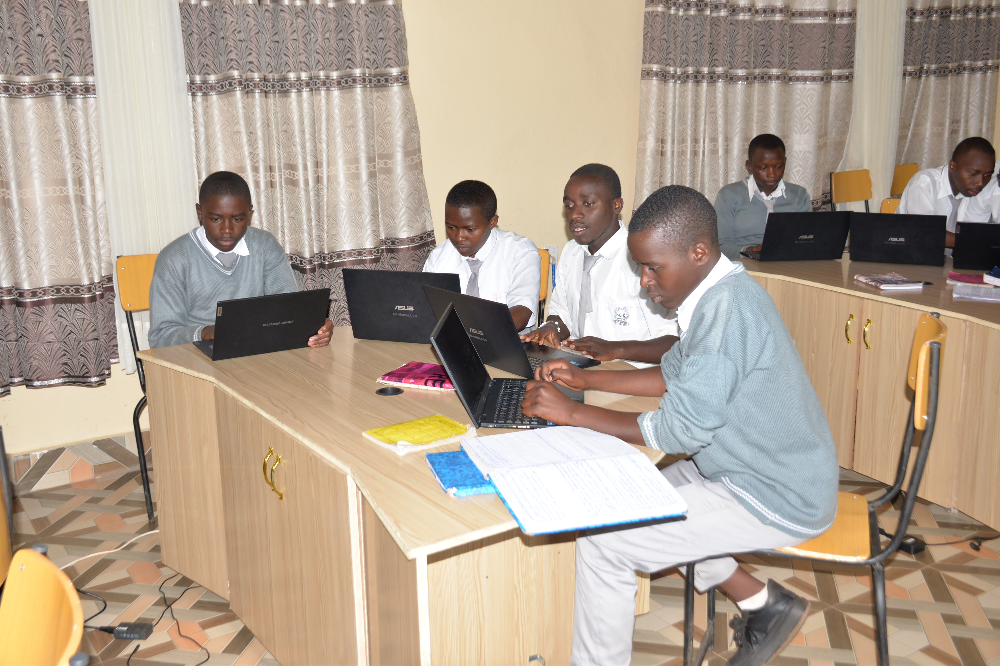

The MMP workshop provides students with practical skills in multimedia production, photography, video editing, and digital content creation. Students work with modern cameras, studio equipment, and computer software to develop creative and technical abilities. The workshop encourages teamwork, innovation, and hands-on learning through real media projects and presentations. Learners gain experience in communication, visual storytelling, and professional media production techniques. This environment prepares students for future opportunities in media, broadcasting, and digital technology careers. 🎬💻


The SOD workshop focuses on developing students’ skills in software operation, computer applications, and digital technology systems. Students practice using modern computer laboratories equipped with updated software and professional learning tools. The workshop strengthens problem-solving, creativity, and technical understanding through practical assignments and projects. Learners gain confidence in operating computer systems, managing digital tasks, and applying technology in real-life situations. This training prepares students for advanced studies and future careers in the world of information technology and software development. 🖥️